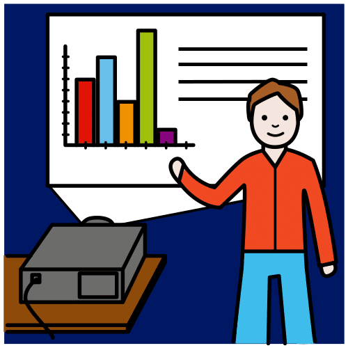
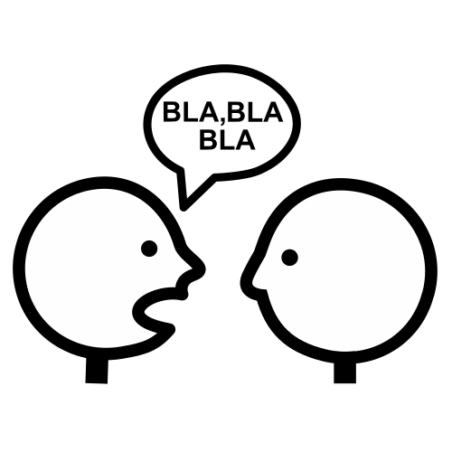

REALIZO MI PRESENTACIÓN
¡HA LLEGADO LA HORA DE LA VERDAD!
Cada niño o niña explica lo que ha hecho en su diapositiva.

¡Recuerda! Habla alto y claro.

¡Quita los nervios, tú puedes!
PEQUEÑOS EXPLORADORES: APRENDEMOS MATEMÁTICAS JUGANDO
SDA 4 MATEMÁTICAS 1º PRIMARIA
Cada niño o niña explica lo que ha hecho en su diapositiva.

¡Recuerda! Habla alto y claro.

¡Quita los nervios, tú puedes!